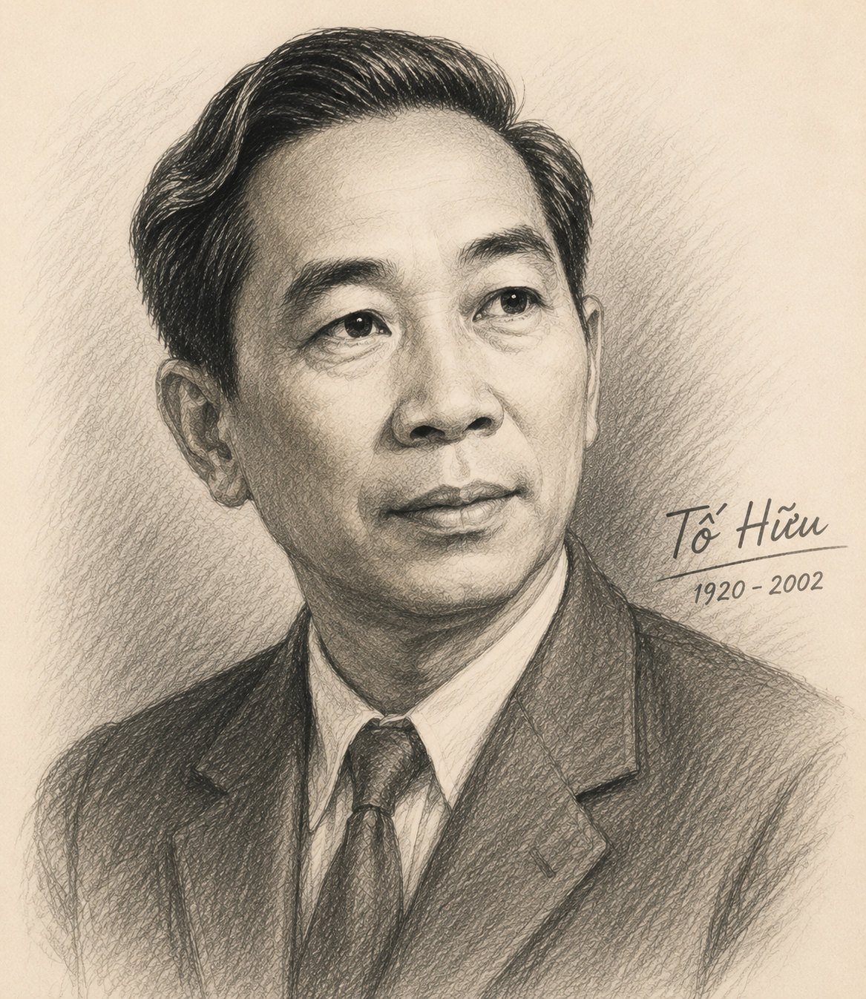

"Theo trải nghiệm của bạn, một nỗi nhớ thường được khởi đầu và phát triển như thế nào? Hãy tưởng tượng về cách bạn mở đầu một sáng tác ngôn từ có nội dung thể hiện nỗi nhớ của bản thân. Điều gì sẽ được nói đến trước hết? Vì sao?"
Tên khai sinh:
Nguyễn Kim Thành, quê gốc ở làng Phù Lai, nay thuộc xã Quảng Thọ, huyện Quảng Điền, tỉnh Thừa Thiên Huế.
Vị trí & Phong cách nghệ thuật:
Các tập thơ chính (7 tập):
Từ ấy (1946), Việt Bắc (1954), Gió lộng (1961), Ra trận (1972), Máu và hoa (1977), Một tiếng đờn (1992), Ta với ta (2000).

Hình 1: Nhà thơ Tố Hữu (h1.png)Hoàn cảnh sáng tác: Bài thơ được viết vào tháng 7/1939, trong thời gian Tố Hữu bị thực dân Pháp bắt giam tại nhà lao Thừa Phủ (Thừa Thiên Huế).
Xuất xứ: Sau Cách mạng tháng Tám 1945, bài thơ được đưa vào tập Từ ấy (phần "Pha phong").
Cảm xúc chủ đạo: Nỗi nhớ quê hương, đồng ruộng, con người tha thiết cùng khao khát tự do mãnh liệt của người thanh niên yêu nước đang chịu cảnh tù đày.
❓ Câu 1 (Trang 56): Tiếng hò có mối quan hệ như thế nào với nỗi nhớ?
Trả lời: Tiếng hò là tác nhân trực tiếp khơi gợi nỗi nhớ. Tiếng hò lẻ loi, não nùng cất lên trong trưa hiu quạnh đánh thức không gian đồng quê và làm trỗi dậy nỗi cô đơn, thương nhớ da diết trong tâm hồn nhà thơ.
❓ Câu 2 (Trang 56): Các hình ảnh hiện lên ở các khổ thơ đầu có đặc điểm gì?
Trả lời: Các hình ảnh (gió cồn thơm, ruồng tre mát, ô mạ xanh, nương khoai ngọt, xóm nhà tranh...) đều rất bình dị, thân thuộc, mộc mạc, đậm chất quê hương miền Trung và tràn đầy sức sống.
❓ Câu 3 (Trang 56): So với khổ thơ thứ nhất, khổ thơ thứ tư có điểm gì giống và khác?
Trả lời:
❓ Câu 4 (Trang 56): Hãy tưởng tượng về hình ảnh "bàn tay... vãi giống tung trời".
Trả lời: Đó là hình ảnh người lao động khỏe khoắn, tràn đầy hi vọng gieo từng hạt giống trên cánh đồng vào sớm mai. Động tác "vãi giống tung trời" mang vẻ đẹp tự do, hào hùng, chan hòa với thiên nhiên đất trời.
❓ Câu 5 (Trang 57): Đối tượng được gọi là "hồn thân" ở đây gồm những ai?
Trả lời: "Hồn thân" là những con người lao động nghèo khổ nhưng chân chất, hiền lành, dãi gió dầm mưa nơi quê nhà (người mẹ già đơn chiếc, những nông dân lam lũ, tình nghĩa khoai sắn thiệt thà).
❓ Câu 6 (Trang 57): "Tôi" ở khổ thơ này có sự phát triển như thế nào so với "tôi" ở khổ thơ trên?
Trả lời: Từng "băn khoăn đi kiếm lẽ yêu đời", "vẩn vơ theo mãi vòng quanh quẩn", nhân vật trữ tình đã có sự giác ngộ lý tưởng cách mạng, trở nên "nhẹ nhàng như con chim cà lơi", say sưa cất tiếng hát giữa bầu trời tự do.
❓ Câu 7 (Trang 57): Hình ảnh "cánh chim buồn nhớ gió mây" biểu đạt cảm xúc gì?
Trả lời: Biểu đạt nỗi đau đớn, u uất khi đang từ tự do lại bị giam cầm trong bốn bức tường tù ngục, đồng thời thể hiện khát vọng mãnh liệt muốn tung cánh trở lại với thế giới tự do và phong trào cách mạng.
| Yếu tố cấu tứ | Biểu hiện cụ thể trong bài thơ | Tác dụng thẩm mỹ |
|---|---|---|
| Sự lặp lại (Khổ 1, 4, 7, 13) | Các khổ 1, 4, 7, 13 như những điệp khúc âm thanh: "Gì sâu bằng những trưa hiu quạnh..." | Tạo nhịp điệu xoáy sâu, khắc họa sự trằn trọc, miên man không dứt của nỗi nhớ. |
| Điệp từ / Điệp ngữ "Đâu" | Xuất hiện 10 lần ở đầu các câu thơ, dồn dập, liên tiếp. | Thể hiện tâm trạng ngơ ngác, kiếm tìm, tiếc nuối không gian quen thuộc giờ đã xa cách. |
| Mạch phát triển cảm xúc | Từ tiếng hò trưa $\rightarrow$ Cảnh ruộng đồng $\rightarrow$ Con người dãi nắng dầm mưa $\rightarrow$ Nỗi nhớ chính mình $\rightarrow$ Trở lại thực tại tù giam. | Mạch cảm xúc đi từ ngoại cảnh vào nội tâm, từ quá khứ đến thực tại, thống nhất và chặt chẽ. |
Câu 1: Nhan đề "Nhớ đồng" và ý nghĩa của từ "đồng"?
- Nhan đề "Nhớ đồng" đã bao quát trọn vẹn mạch cảm xúc. Từ "đồng" không chỉ là đồng ruộng, quê hương vật chất hữu hình, mà còn là đồng bào, đồng chí, đồng cảnh ngộ - thế giới của những con người lao động tự do và lý tưởng cách mạng.
Câu 2: Quy luật phân bố của các khổ thơ 1, 4, 7, 13?
- Phân bố theo quy luật điệp khúc/vòng lặp kết nối (sau mỗi 2-3 khổ thơ miêu tả lại xuất hiện 1 khổ điệp khúc). Điều này tạo nên cấu tứ kết nối vòng quanh, nhấn mạnh nỗi nhớ lặp đi lặp lại như những cơn sóng lòng không bao giờ nguôi.
Câu 3: Hệ thống hình ảnh và sự đan cài, phối hợp?
- Tác giả phối hợp đan cài giữa hình ảnh thiên nhiên (gió, mạ, khoai, chiều sương) với hình ảnh con người (lưng cong, bàn tay vãi giống, mẹ già). Sự phối hợp này làm cho bức tranh quê hương vừa thơ mộng vừa ấm áp hơi thở cuộc sống.
Câu 4: Vai trò của từ "đâu" trong cấu tứ bài thơ?
- Từ "đâu" lặp lại 10 lần đóng vai trò là nhịp kết nối không gian và thời gian. Nó là tiếng hỏi dằn dỗi, tha thiết, xoáy sâu vào khoảng trống vắng trong thực tại giam hãm.
Câu 5: Tác dụng của việc luân phiên câu hỏi, câu kể và câu cảm?
- Bộc lộ đa dạng các cung bậc tâm trạng: Câu hỏi thể hiện sự trăn trở, câu kể khơi gợi ký ức, câu cảm bộc phát nỗi niềm xót xa mãnh liệt. Tất cả tạo nên sự biến hóa linh hoạt trong giọng điệu trữ tình.
Câu 6: Hình ảnh tượng trưng rõ nét nhất?
- Hình ảnh "con chim cà lơi" (sơn ca) và "cánh chim buồn nhớ gió mây": Tượng trưng cho tâm hồn người chiến sĩ cách mạng yêu tự do, khao khát sống dấn thân và cống hiến cho đời.
Câu 7: Tâm trạng, phẩm chất và lý tưởng của nhân vật trữ tình?
- Đó là một người chiến sĩ cộng sản trẻ tuổi giàu tình yêu thương quê hương đất nước, nhạy cảm, kiên trung, gắn bó sâu sắc với nhân dân và luôn giương cao lý tưởng tự do.
"Viết đoạn văn (khoảng 150 chữ) làm sáng tỏ mối liên hệ giữa các chi tiết, hình ảnh đã làm nên thế giới cảm xúc 'nhớ đồng' trong bài thơ."
Đoạn văn tham khảo:
Thế giới cảm xúc "nhớ đồng" trong bài thơ cùng tên của Tố Hữu được dệt nên từ sự đan cài tài tình giữa các chi tiết, hình ảnh chân thực và xúc động. Bắt đầu từ tiếng hò cô đơn giữa trưa hiu quạnh, nỗi nhớ lan tỏa ra khắp không gian rộng lớn của đồng quê miền Trung với "gió cồn thơm", "ô mạ xanh", "nương khoai ngọt" và những "xóm nhà tranh sleeping im hơi". Các chi tiết thiên nhiên ấy không đứng riêng lẻ mà gắn liền chặt chẽ với hình ảnh con người lao động cần cù: lưng cong xuống luống cày, bàn tay gieo giống tung trời, cùng mẹ già đơn chiếc. Tất cả các hình ảnh được kết nối logic qua điệp từ "đâu", xoáy sâu vào tâm trạng khắc khoải của nhân vật trữ tình trong chốn tù đày. Cuối cùng, hình ảnh "cánh chim buồn nhớ gió mây" kết tụ toàn bộ thế giới cảm xúc ấy thành khao khát tự do mãnh liệt, làm nổi bật tâm hồn chiến sĩ cách mạng luôn hướng về nhân dân và lý tưởng.
Đại tướng Nguyễn Chí Thanh (1914 - 1967), người bạn chiến đấu thân thiết của Tố Hữu, chính là người được tác giả đề tặng câu "Tặng Vịnh" ở đầu bài thơ Nhớ đồng.
Vận dụng kiến thức về cấu tứ điệp khúc trong bài "Nhớ đồng" để phân tích nhịp điệu và mạch cảm xúc trong các tác phẩm thơ trữ tình cùng thời kỳ (1930 - 1945).
Khi phân tích thơ Tố Hữu, cần chú ý tính chất trữ tình - chính trị hòa quyện. Cảm xúc cá nhân của cái "tôi" luôn gắn liền với vận mệnh cộng đồng và lý tưởng cách mạng.
10 câu hỏi trắc nghiệm củng cố kiến thức (Mức độ Nhận biết, Thông hiểu, Vận dụng)
Bài 1: Phân tích ý nghĩa thẩm mỹ của điệp từ "đâu" (xuất hiện 10 lần) trong bài thơ Nhớ đồng.
Lời giải chi tiết:
- Điệp từ "đâu" lặp lại 10 lần ở đầu các câu thơ đóng vai trò nhịp điệu chủ đạo trong cấu tứ bài thơ.
- Ý nghĩa: Nó biểu thị câu hỏi tu từ khắc khoải, diễn tả nỗi tiếc nhớ dằn dỗi trước những cảnh vật, con người quen thuộc giờ đây đã bị ngăn cách bởi bức tường nhà tù.
- Tác dụng: Tạo nên nhịp điệu dồn dập, gián tiếp mở ra toàn bộ không gian ký ức rực rỡ và đấm ấm của vùng quê Thừa Thiên Huế.
Bài 2: Tính toán chỉ số tần suất xuất hiện của các hình ảnh thiên nhiên so với con người trong bài thơ và rút ra nhận xét.
Lời giải chi tiết:
- Thống kê: Bài thơ có 13 khổ thơ. Trong đó có khoảng 6 khổ thơ tập trung vào thiên nhiên (gió cồn, ô mạ, nương khoai, luồng tre, chiều sương) và 5 khổ thơ tập trung trực tiếp vào con người (lưng cong luống cày, bàn tay vãi giống, mẹ già, hồn thân, cái tôi chiến sĩ), 2 khổ lặp lại cảm xúc chung.
- Tỉ lệ: Thiên nhiên chiếm ~46%, Con người chiếm ~38%, Cảm xúc trực tiếp ~16%.
- Nhận xét: Bức tranh "Nhớ đồng" có sự cân bằng tài tình giữa cảnh vật và con người. Cảnh đượm tình và người là trung tâm của nỗi nhớ.
Bài 3: Hãy chứng minh "Nhớ đồng" là một bài thơ có sự kết hợp hài hòa giữa chất trữ tình tha thiết và lý tưởng cách mạng kiên trung.
Lời giải chi tiết:
- Chất trữ tình tha thiết thể hiện qua tiếng hò ruột gan, nỗi nhớ mẹ già đơn chiếc, nhớ xóm nhà tranh, nhớ mùi hương đất đai nức say.
- Lý tưởng cách mạng kiên trung thể hiện qua sự tỉnh thức khi gặp ánh sáng cách mạng ("Nhẹ nhàng như con chim cà lơi / Say đồng hương nắng vui ca hát"), và thái độ không khuất phục trước cảnh tù đày ("Tôi mơ qua cửa khám bao ngày").
- Hai yếu tố này hòa quyện giúp bài thơ không sa vào bi lụy mà tràn đầy tinh thần lạc quan, hướng về tương lai.